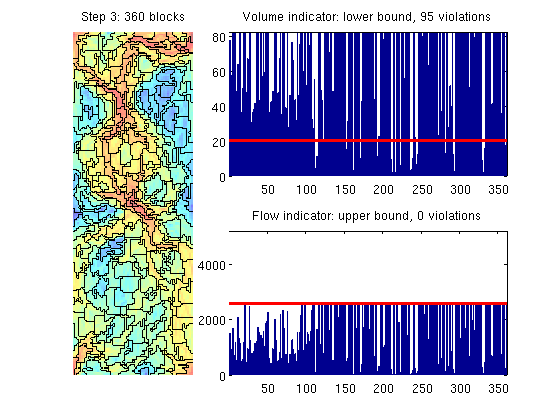
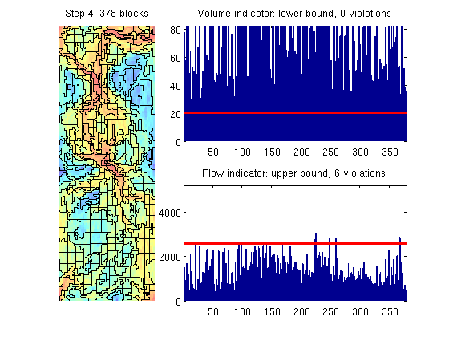

Example 4: Nonuniform Coarsening of SPE10
This example shows how to perform flow-based coarsening using the algorithm proposed by Aarnes et al. [1], in which the key idea is to distinguish cells in high-flow and low-flow regions. To this end, we start by the following ad-hoc algorithm:
- Segment log(v) to get an initial partition.
- Merge blocks whose volumes are below a lower limit.
- Refine blocks in which the flow exceeds an upper limit
- Merge blocks whose volumes are below a lower limit.
The original algorithm consisted of the four steps above. Here, however, we repeat the last two steps a few times to obtain better grids. The resulting algorithm is a special case of a more general framework described by Hauge et al. [2].
The purpose of the example is to demonstrate the main coarsening steps for a single layer of the SPE10 model and compare the flow-adapted grid with streamlines traced from the flow field used to adapt the grid.
References:
- J. E. Aarnes, V. L. Hauge, Y. Efendiev, Coarsening of three-dimensional Structured and unstructured grids for subsurface flow. Advances in Water Resources, Volume 30, Issue 11, November 2007, pp. 2177--2193.
- V. L. Hauge, K.-A. Lie, J. R. Natvig, Grid coarsening based on amalgamation for multi-fidelity transport solvers, September 2010. http://www.sintef.no/Projectweb/GeoScale/Publications/
Contents
Set up and solve flow problem
As our example, we consider a standard five spot with heterogeneity sampled from Model 2 of the 10th SPE Comparative Solution Project, which we assume that the user has downloaded to a specific data directory using the functions supplied as part of the MRST data sets.
try require spe10 catch me mrstModule add spe10; end try require gridtools catch me mrstModule add gridtools; end try require coarsegrid catch me mrstModule add coarsegrid; end [G, W, rock] = SPE10_setup(25); rock.poro = max(rock.poro, 1e-3); rock.perm = rock.perm(:,1); fluid = initSingleFluid('mu' , 1*centi*poise , ... 'rho', 1014*kilogram/meter^3); % Solve for pressure and velocity, using no-flow boundary conditions. rSol = initState(G, W, 0); S = computeMimeticIP(G, rock); rSol = solveIncompFlow(rSol, G, S, fluid, 'wells', W);
Compute indicator and set parameters used later in the algorithm
Compute a scalar, cell-wise velocity measure and use the logarithm of the velocity measure as our flow indicator
v = faceFlux2cellVelocity(G, rSol.flux); v = sqrt(sum(v .^ 2, 2)); iVel = log10(v); iVel = iVel - min(iVel) + 1; NL = 10; NU = 75;
Segment indicator into bins
In the first step, we segment the indicator value into ten bins. An alternative choice could have been to set numBins = round(max(iVel)-min(iVel))
p = segmentIndicator(G, iVel, 10); plotCoarseningStep(p, G, rock.poro, iVel, NL, NU, 1, true);
Merge small blocks
The segmentation will typically create a speckle of small blocks that we do not want in our coarse grid. Each small block is therefore merged with its neighbouring block that has the closest indicator value. Here, we use porosity as indicator when measuring which blocks to merge
p2 = mergeBlocks2(p, G, rock.poro, iVel, NL, NU); plotCoarseningStep(p2, G, rock.poro, iVel, NL, NU, 2, true);
Refine blocks
Merging blocks may give new blocks through which there is too much flow. We therefore refine blocks in which the flow exceeds an upper bound.
p = refineBlocks(p2, G, iVel, NU, @refineGreedy2); plotCoarseningStep(p, G, rock.poro, iVel, NL, NU, 3, true);
Merge small blocks
The refinement step may have created blocks that have too small volume. As a safeguard, we merge these
p = mergeBlocks2(p, G, rock.poro, iVel, NL, NU); [b, p] = findConfinedBlocks(G, p); plotCoarseningStep(p, G, rock.poro, iVel, NL, NU, 4, true);
Repeat refinement and merging
p = refineBlocks(p, G, iVel, NU, @refineGreedy2); p = mergeBlocks2(p, G, rock.poro, iVel, NL, NU); plotCoarseningStep(p, G, rock.poro, iVel, NL, NU, 4, true);
p = refineBlocks(p, G, iVel, NU, @refineGreedy2); p = mergeBlocks2(p, G, rock.poro, iVel, NL, NU); plotCoarseningStep(p, G, rock.poro, iVel, NL, NU, 4, true);
Other refinement algorithms
The refineGreedy routine grows blocks somewhat agressively by adding rings of neighbouring cells at the time. The results are typically worse than for refineGreedy2
p = refineBlocks(p2, G, iVel, NU, @refineGreedy); [b, p] = findConfinedBlocks(G, p); p = mergeBlocks2(p, G, rock.poro, iVel, NL, NU); plotCoarseningStep(p, G, rock.poro, iVel, NL, NU, 4, 1);
Better results may be obtained if we use the refineGreedy3 method in which the neighbouring cells are sorted in descending order in terms of the number of faces shared with cells in the growing block. Unfortunately, the method is quite expensive and its use is not recommended for large models.
p = refineBlocks(p2, G, iVel, NU, @refineGreedy3, 'nlevel',2); [b, p] = findConfinedBlocks(G, p); %#ok<*ASGLU> p = mergeBlocks2(p, G, rock.poro, iVel, NL, NU); plotCoarseningStep(p, G, rock.poro, iVel, NL, NU, 4, 1);
Alternatively, we can perform a Cartesian refinement of each block, which leads to a higher number of blocks.
pC = refineBlocks(p2, G, iVel, NU, @refineUniform, 'cartDims', [2 2 1]);
pC = mergeBlocks2(pC, G, rock.poro, iVel, NL, NU);
[b, p] = findConfinedBlocks(G, p);
plotCoarseningStep(pC, G, rock.poro, iVel, NL, NU, 4, 1);
 Compare with streamlines
To show how the NUC grid adapts to the flow field, we plot permeability field, pressure field with streamlines, and flow-adapted grid. As we can observe from the figure, the flow-adapted grid aligns neatly with the high-flow and low-flow regions
clf, subplot(1,3,1) plotCellData(G,log10(rock.perm)); axis tight off subplot(1,3,2) mrstModule add streamlines plotCellData(G,rSol.pressure,'FaceAlpha',.5); nx = G.cartDims(1); cells = [... (-nx/6:nx/6) + W(5).cells - 4*nx, (-nx/6:nx/6) + W(5).cells + 4*nx, ... (0:nx/10) + W(1).cells + 4*nx, (-nx/10:0)+W(2).cells + 4*nx, ... (0:nx/10) + W(3).cells - 4*nx, (-nx/10:0)+W(4).cells - 4*nx, ... ]; h = streamline(pollock(G, rSol, cells')); set(h,'Color','b'); rSol.flux = -rSol.flux; h = streamline(pollock(G, rSol, cells')); set(h,'Color','b'); rSol.flux = -rSol.flux; plotWell(G,W); axis tight off subplot(1,3,3) plotCellData(G,iVel); outlineCoarseGrid(G, p); axis tight off